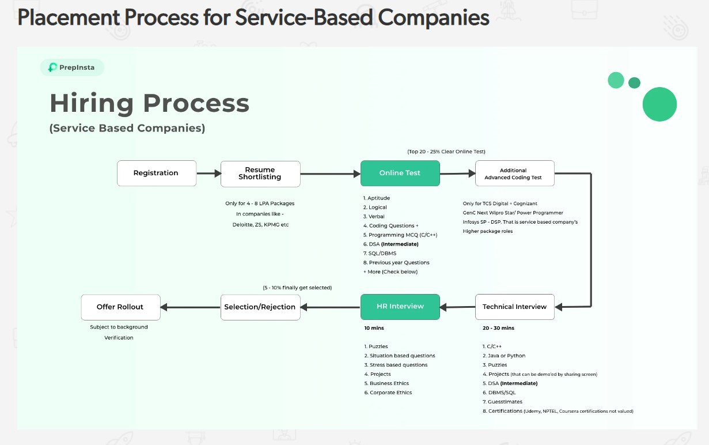
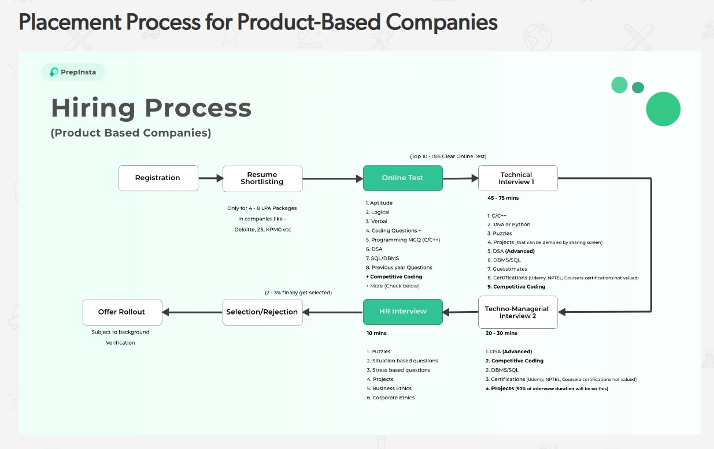
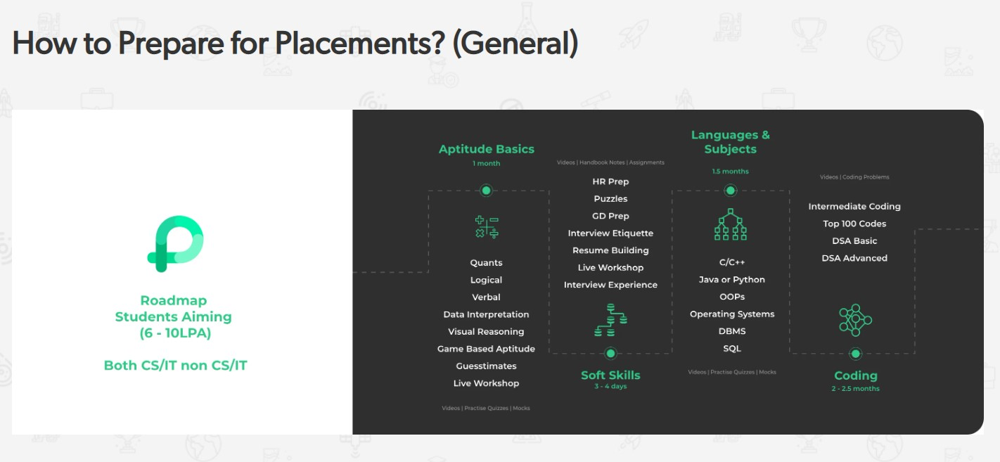
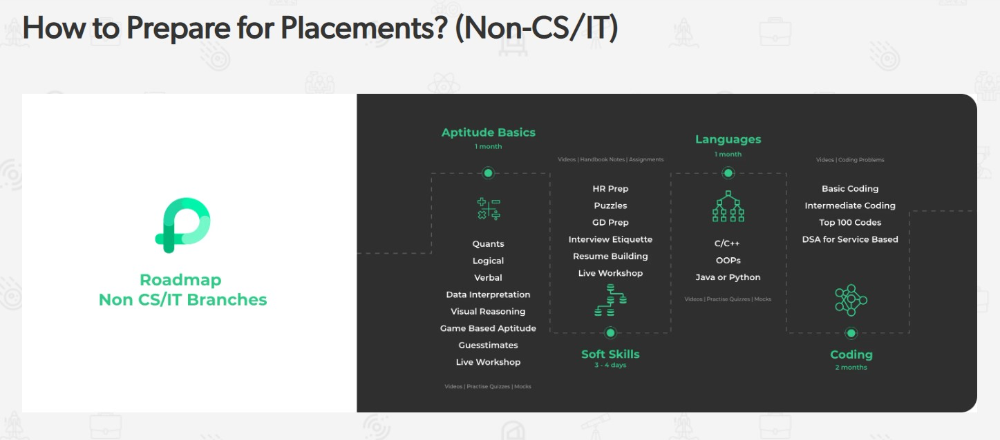
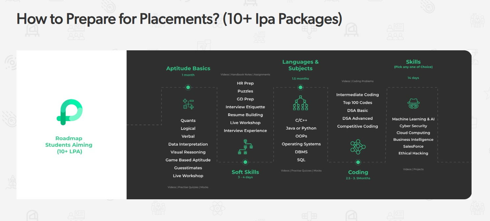

We offer the greatest resource with the best shortcuts to give your placement preparation an edge in getting placed quickly.
Your one-stop solution to cracking the coding interview of your dreams is here! Whether you're a
TCE guy, college student or someone with experience, preparing for an interview requires smart learning,
dedication and great resources. And this complete preparation package roadmap will help you learn 4 years'
worth of knowledge in just 6 months!
Steps to Prepare for Placements and Roadmap to get placed





Placement Rounds
Following rounds are conducted in the placement . You will also find relevant links to help prepare.
1. RESUME SHORTLISTING
A resume is the first step when applying for a drive. On our Interview Preparation Dashboard, we have included a step-by-step guide on how to make the perfect resume.
To Note:- Most Service-Based Companies do not conduct resume-based shortlisting. However for Product-Based Companies, the first step is resume shortlisting and almost 50 percent candidates are
rejected in this round.
2. ONLINE ASSESSMENT
An Online Assessment is conducted by all the companies to test a candidate. It is the first step of the recruitment process. It is conducted on platforms like AMCAT, CoCubes, Mettl, etc.
There are two parts in online assessment:
Aptitude
Coding
2.1 Aptitude Test
Aptitude includes Quants, Verbal and Logical sections. It is the first online assessment round. This is perhaps the most important part, as failing to clear aptitude leads to direct expulsion. This is also the part where students
struggle as they neglect it during preparation. Therefore, we highly recommend you to prepare for Apti.
This includes Multiple Choice Questions based on programming concepts and theoretical knowledge.
Hands-on Coding
This includes developing programs for the given problem statements.
Below we have provided a priority order, in which you should prepare for placements.
1. C/C++
C/C++ should be your top priority. Most companies have a programming round with MCQ questions. These questions are based on C and C++. These languages have concepts that are not present in other programming languages like pointers,
operator overloading, etc.
On PrepInsta, we have divided the process of learning coding into three parts:-
Basic
Intermediate
Advanced
For most companies, preparing up to Intermediate coding should be enough. But if you have time, then definitely practice advanced coding. You can practice the most important codes that can be asked in placement round on our Top 100 codes
page.
Once you have got C and C++ down, start learning either JAVA or Python. There is no set priority as to which language you should learn first. It depends on your preference and area of interest. For instance, Python is preferred for Data
Science, AI/ML, etc. While JAVA is good for frontend and backend roles.
To note: This should take around 2 weeks. I don’t think people who are consistently doing CP would face the need of doing linked lists, stacks, etc. from GeeksforGeeks. But it’s good if you give it a fast skimming read.
3. Group Discussion
GD round tests a candidate’s communication skills and ability to deliver a presentation. It is a tough round, and in most campus drives, the majority of the candidates are eliminated from this round only.
Check our Group Discussion Dashboard to know more about this round.
To note: The participants can range from 7 to 12 in a group. The number of candidates in a Group Discussion depends on the available strength. If the strength is low, the number of participants can range from 5 to 7.
4. Technical Interview
Technical Interviews are the most important interviews of the recruitment process. In this round, a candidate’s technical and coding skills are tested. For the Technical Round, questions are asked from C, C++, hands-on coding,
projects, certifications, and more. On our Technical Interview Dashboard, we have five hundred plus Technical Interview Questions for you to prepare from.
To note:In a technical interview, it is not uncommon for interviewers to present brain teasers, numerical reasoning problems or technical assessment problems that test a candidate's ability to create solutions and solve problems. Hiring managers may conduct technical interviews on the phone or through online face-to-face communication platforms as well as in-person.
5. Techno-Managerial Interview
Managerial Interview rounds consists of situational based questions. Here the interviewer gives the candidate, specific scenarios and they have to describe how they would act. STAR approach is preferred for this round. On our MR
Interview Dashboard you will find the most important MR Questions asked during an MR Interview.
To Note:- The interviewer also focuses on Projects in the managerial round. For Product-Based companies, technical skills are also checked in this round.
6. HR Interview
HR Interview is the concluding round of the recruitment process. It is a tough round that tests whether or not the candidate is fit for the company. On PrepInsta, you will find the most important HR Interview Questions and a complete
guide on how to answer them.
To note: Focus on your prior accomplishments.
Provide an overarching overview of your career up until this point without being long-winded.
Additional Skills
Listed below are additional skills that you need to develop in order to prepare for placement rounds.
1. Data Structure Algorithms
Lately, DSA is becoming more and more important for placement rounds. IT companies are starting to keep the knowledge of DSA as an eligibility criteria. We would suggest you to give DSA 15 to 30 days for preparation. On our website, you
will find all the links to learn DSA and ace your preparations.
Apart from Technical Skills, interviewers will also ask puzzles and logical reasoning questions. These questions check the IQ of the candidates and test their problem-solving skills. On PrepInsta, you will find the most common interview
puzzles along with their solutions.
Nowadays, companies expect candidates to have knowledge of popular skills like Machine Learning and Artificial Intelligence. On PrepInsta Prime, you will find courses to learn these digital skills.
Machine Learning
Artificial Intelligence
Cyber Security
Ethical Hacking
NLP and Deep Learning
To Note:- We will advise not to pick web development as an additional digital skill. This is because it will take you at least six months to completely learn it. It is not feasible to spend such a
long time on one skill, unless you are starting your preparation from third or fourth semester.
5. Most Asked Questions on Technical Skills
Apart from Coding skills, IT companies expect Technical Knowledge as well. These include knowledge of Database Management, SQL, Operating Systems, and more. On our Technical Interview Dashboard, you will find important questions asked
from these topics.
For general multinational companies (service-based and product-based) who hire freshers from campuses, the above materials are sufficient to prepare. You can do your revision by targeting specific companies.
Career Planet
Not convinced yet?
if Still your query is not resolved? get connected with us to acquire peer to peer interaction with our expert team
Doubts overflow
Get your doubts clarified with our global Doubts Overflow platform
Follow us on
Let us be social and give me more information about you